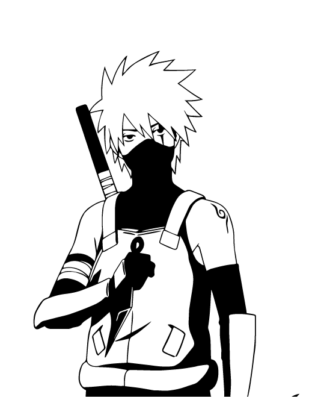

“When a man learns to love, he must bear the risk of hatred.” – Madara Uchiha
“It is only through the eyes of others that our lives have any meaning.” – Haku
“A person grows up when he’s able to overcome hardships. Protection is important, but there are some things that a person must learn on his own.” – Jiraiya
“When people get hurt, they learn to hate… When people hurt others, they become hated and racked with guilt. But knowing that pain allows people to be kind. Pain allows people to grow… and how you grow is up to you.” – Jiraiya
“The moment people come to know love, they run the risk of carrying hate.” – Obito Uchiha
"People live their lives bound by what they accept as correct and true. That's how they define "reality". But what does it mean to be "correct" or "true"? Merely vague concepts... Their "reality" may all be a mirage. Can we consider them to simply be living in their own world, shaped by their beliefs?" - Itachi
